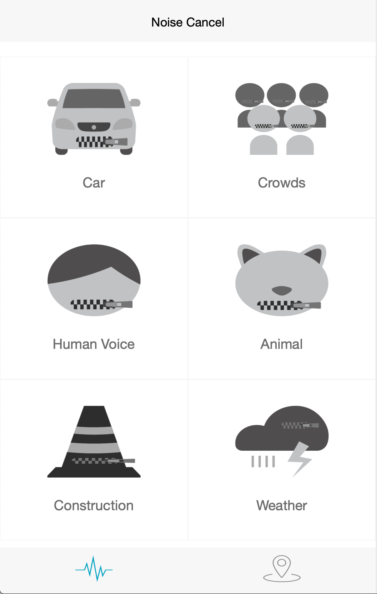
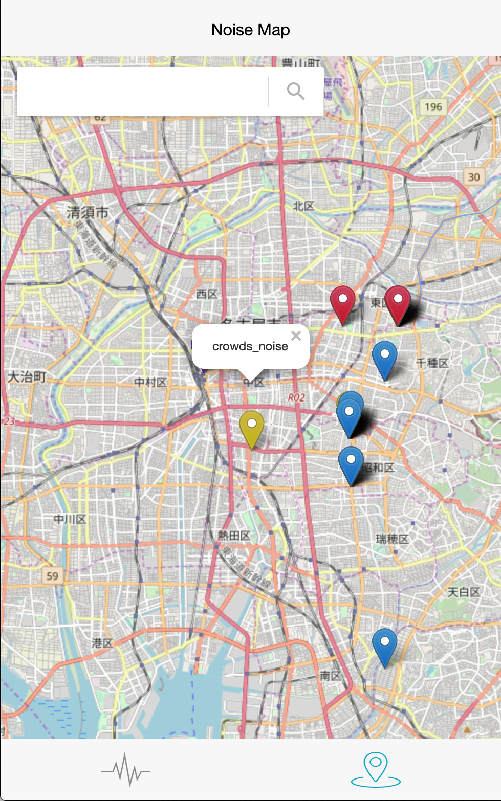

ノイズキャンセルング × iot で生活の新機軸を提案
「雨音」や、「人の話し声」と言った種類毎のノイズキャンセリングを任意で行う。
その際、キャンセリングしたノイズの種類,座標,音声情報をクラウド上に保存する。
保存された音声データは、ノイズキャンセリングに使用するノイズの逆位相算出のためのサンプルデータとして、機械学習に用いられる。
また、キャンセリングしたノイズの種類,座標を元にノイズマップを生成し、新規,既存のマップサービスの向上を図る。
運用例として、「この道は車の騒音がよく検知されていることから、子連れの人には別の道を勧める」など、既存のマップサービスではカバーしにくかった「能動的に情報を集めなければいけない場面」での利用が考えられる。
既存のマップサービスの多くは、ユーザーの文字情報の書き込みによって膨大な情報を処理していることから、音によるマップサービスへのアプローチはこうしたニーズへ対応できるのではないかと考える。
webアプリ内のマップ表示には「leaflet.js」を用いた。
また、マッピング内におけるノイズマーカーの座標,ノイズの種類名の保存にはfirebaseの「Realtime Database」を用いた。
ノイズ音のサンプルデータは同じくfirebseの「storage」に保存し、機械学習用のpythonとの連携を容易にした。
-  
このプロダクトの将来像としてこの製品が世の中に普及した未来を映像化し、このプロダクトが創造する価値について再度提示した。
生活を豊かにするIoTを製作する、という広範囲なテーマのもとハッカソン形式で行われた実習で発表した作品。
マインドマップによるアイデア出しから始まり、出たアイデアによるプレゼンコンペをした後、優秀な5つのアイデアのうちの一つに選ばれグループ制作を行うに至った。
自身はプロデューサーとして全体の制作管理から進行まで幅広くこなした。
また、アプリケーションエンジニアとしても活躍し、通信周りのシステム構築も担当した。